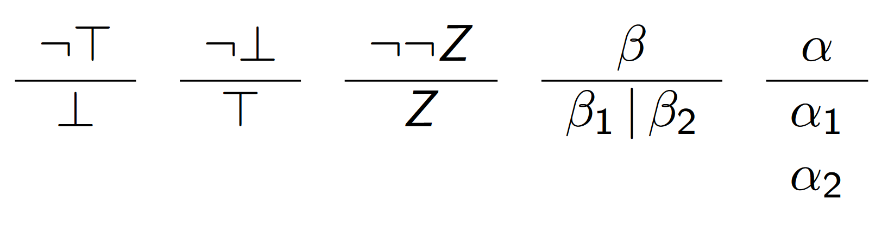
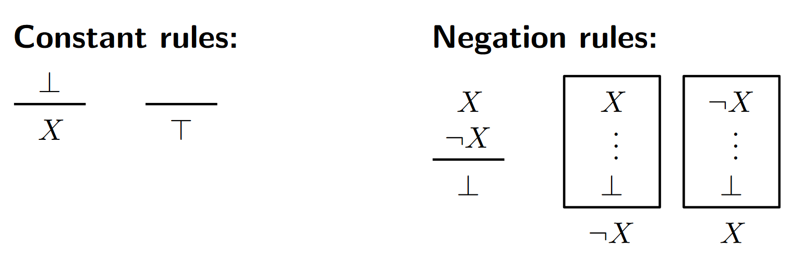
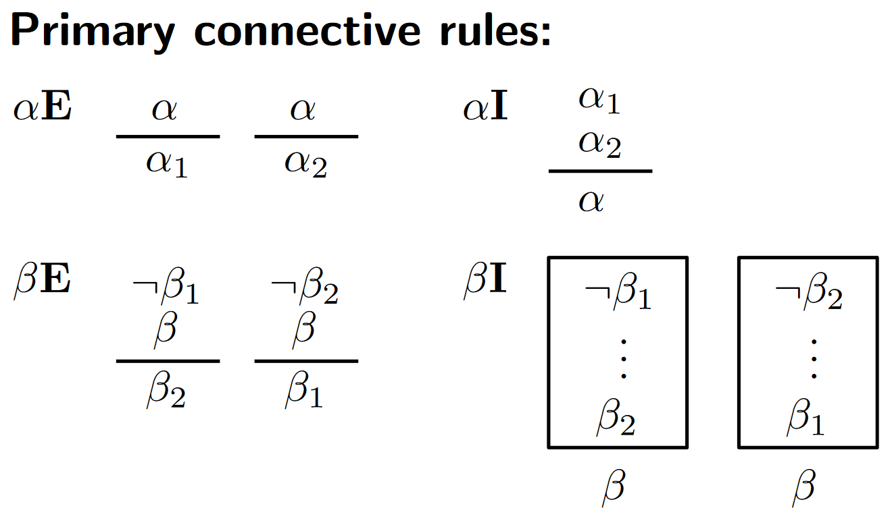

Logic crib sheet
Propositional consequence
We say that a formula \(X\) is a consequence of a set \(S\) of formulas, denoted \(S \vDash X\) , provided that \(X\) maps to \(T\) under every valuation that maps every member of \(S\) to \(T\) .
X is a tautology if and only if \(\empty \vDash X\) , which we write as \(\vDash X\).
Boolean algebra laws

\(\alpha\) and \(\beta\) formula

Generalised operands
Generalised disjunction
- \[[X_1, X_2, ..., X_n] = X_1 \vee X_2 \vee ... \vee X_n\]
- \(v([X_1, X_2, ..., X_n]) = T\) if and only if \(v(X_i) = T, \quad \exists V_i\)
- \[v([]) = v(\bot) = F\]
Generalised conjunction
- \[\langle X_1, X_2, ..., X_n \rangle = X_1 \wedge X_2 \wedge ... \wedge X_n\]
- \(v(\langle X_1, X_2, ..., X_n \rangle) = T\) if and only if \(v(X_i) = T, \quad \forall V_i\)
- \[v(\langle \rangle) = v(\top) = T\]
Normal forms
Disjunctive normal form
Start with \([ \langle X \rangle ]\), then repeatedly apply the following rules to the expression, terminating when only literals remain:

- \(\beta\)-expansion = replace the conjunction containing \(\beta\) with two conjunctions containing all the same elements except \(\beta\), which is replaced by \(\beta_1\) and \(\beta\) respectively
- \(\alpha\)-expansion = replace the \(\alpha\) within the conjunction with the two formulae \(\alpha_1\) and \(\alpha_2\) still within the conjunction
Conjunctive normal form
Start with \(\langle [ X ] \rangle\), then repeatedly apply the following rules to the expression, terminating when only literals remain:

-
\(\beta\)-expansion = replace the \(\beta\) within the disjunction with the two formulae \(\beta_1\) and \(\beta_2\) still within the disjunction
-
\(\alpha\)-expansion = replace the disjunction containing \(\alpha\) with two disjunctions containing all the same elements except \(\alpha\), which is replaced by \(\alpha_1\) and \(\alpha_2\) respectively
Proof systems
Semantic tableau expansion
Start with \(\neg X\) as the root node, as it is a refutation system, and we are looking for contradictions.
In each step, select a branch and a non-literal formula on that branch, then apply the following rules (same as DNF):
-
\(\beta\)-expansion = add two new child vertices \(\beta_1\) and \(\beta_2\) to the end of the current branch
-
\(\alpha\)-expansion = add a child and grandchild vertices \(\alpha_1\) and \(\alpha_2\) respectively to the end of the current branch
A closed branch is when either both \(N\) and \(\neg N\), or \(\bot\) occur on a branch. If all branches of the expansion are closed, the algorithm terminates.
A tableau is called strict if each vertex in the tree only has one rule applied to it.
A tableau proof of \(X\) is a closed tableau for \(\neg X\), and we write \(\vdash_t X\) to denote this.
Resolution expansion
Start with \(\neg X\) as the first disjunction, as it is a refutation system, and we are looking for contradictions.
In each step, select a disjunction and a non-literal formula \(N\) within it, then apply the following rules to \(N\) (same as CNF):
-
\(\beta\)-expansion = split into two elements within the disjunction
-
\(\alpha\)-expansion = add two new lines
There is another rule called the resolution rule.
Suppose \(D_1\) and \(D_2\) are two disjunctions, with \(N\) occurring in \(D_1\) and \(\neg N\) in \(D_2\).
Let \(D\) be the result of the following:
1) Delete all occurrences of \(N\) from \(D_1\) 2) Delete all occurrences of \(\neg N\) from \(D_2\) 3) Combine the resulting disjunctions
Finally, add \(D\) as a new line in the proof
There is a special case of when a disjunction \(D\) contains \(\bot\), in which case remove all instances of \(\bot\) from the \(D\)
A resolution is called strict if each disjunction in the proof only has one rule applied to it.
A resolution proof of \(X\) is a closed resolution for \(\neg X\), and we write \(\vdash_r X\) to denote this.
Natural deduction
A system of assumptions, with sub-ordinate proofs (lemmas), enclosed within boxes, which can then be used later in the proof. The first formula in a box is an assumption, which is taken as axiomatic, only within the scope of that.
The following rules can be applied:



- Horizontal line indicates given the element(s) above it, the element(s) below it can be added within the same scope
- Box indicates that given a lemma with an initial assumption and final conclusion within it, the element below it can be added to the outer scope
Proof strategies:
- Work inwards from both the start and the end
- Split an implication \(X \rightarrow Y\), by assuming \(X\), then showing \(Y\) can be deduced from it, so hence \(X \rightarrow Y\)
- Assume the \(\neg X\), show that \(\bot\) can be deduced from it, hence \(X\)
We write \(\vdash_d X\) to denote a natural deduction proof of \(X\)
S-introduction
The above proof methods just prove tautologies. These allow us to prove propositional consequences by “introducing” premises from a proposition \(S\).
Semantic tableau
Any formula \(Y \in S\) can be added to the end of any tableau branch. We write \(S \vdash_t X\) if there is a closed tableau for \(\neg X\) from \(S\), allowing the S-introduction rule for tableau.
Resolution
For any formula \(Y \in S\), the line \([ Y ]\) can be added as a line to a resolution expansion. We write \(S \vdash_r X\) if there is a closed resolution expansion for \(\neg X\) from \(S\), allowing the S-introduction rule for resolution.
Natural deduction
For any formula \(Y \in S\), the line \(Y\) can be added as a line anywhere within the natural deduction. We write \(S \vdash_d X\) if there is a natural deduction derivation for \(X\) from \(S\) , allowing the S-introduction rule for resolution.